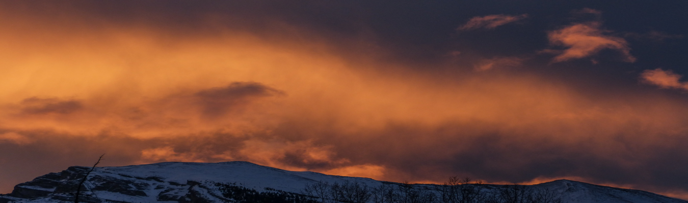
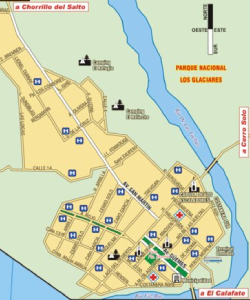
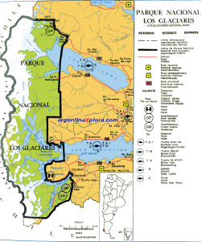
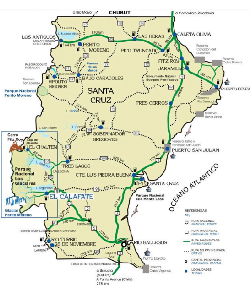
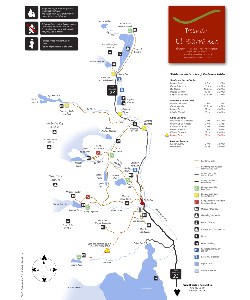

¿QUE NECESITAS SABER ANTES DE VIAJAR A EL CHALTEN?
Visitar el Parque Nacional los Glaciares es siempre una experiencia emocionante y única. Te ayudamos a preparar tu viaje para una aventura sin contratiempos. Esta información te ayudará a disfrutar a pleno de cada instante en el Parque. Esta es una recopilación de las respuestas a las preguntas y dudas que la mayoría de los viajeros de todo el mundo les viene a la mente cuando piensan en viajar a El Chaltén.
Si la encuentras de utilidad ¡compártela con tus amigos!
MAPAS DESCARGABLES



